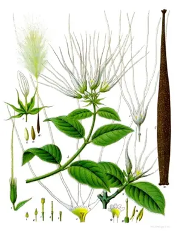

pranet · 出典付きの植物図鑑
hispid strophanthus ☠
Strophanthus hispidus DC. · Apocynaceae

Strophanthus hispidus, the hispid strophanthus, is a liana or shrub that can grow up to 5 metres (16 ft) tall. Its flowers feature a yellow corolla and yellow corona lobes spotted with red, purple or brown. The seeds, like those of several other Strophanthus species, contain potent cardiac glycosides absorbable through wounds - hence its use in African arrow poisons and later in modern medicine as a digitalis-like heart stimulant. Strophanthus hispidus is native from west tropical Africa east to Tanzania and south to Angola. It is naturalized in China.
出典: Wikipedia 英語版「Strophanthus hispidus」 · CC BY-SA 4.0
異名: Strophanthus bariba Boyé & Béréni, Strophanthus hirtus Poir., Strophanthus niger Blondel, Strophanthus tchabe Boyé & Béréni, Strophanthus thierryanus K.Schum. & Gilg
同定や利用は自己責任でお願いします。この図鑑だけを根拠に野生の植物を食べないでください。
出典
- 学名: World Flora Online Plant List 2026-06 · CC0 1.0
- 名前: Wikipedia の記事名と Wikidata · CC0 1.0（Wikidata）。記事名は事実
- 説明: Wikipedia 英語版「Strophanthus hispidus」 · CC BY-SA 4.0
- 食用・毒性: World Checklist of Useful Plant Species (Diazgranados et al. 2020, RBG Kew) · CC BY 4.0
- 分布: World Checklist of Vascular Plants (WCVP), RBG Kew, version 2026-06-04 · CC BY 3.0
このページは pranet のデータから自動生成しています。コードは MIT、データは項目ごとのライセンス（説明）。